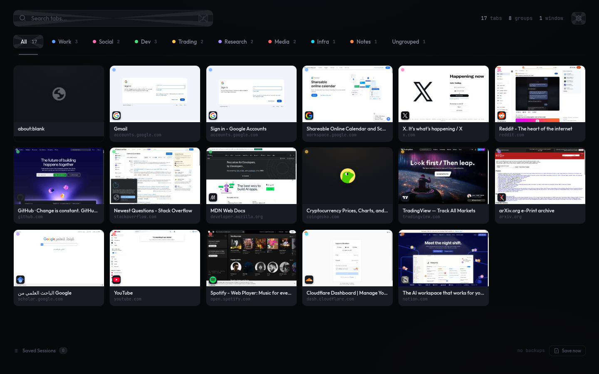

Speed Dial turns your new tab page into a live overview of all your open tabs. Think of it as your tab bar, but laid out as a visual grid with real page screenshots. Tabs stay organized by their groups, and there's search if you need to find something fast. It backs everything up automatically, so if you close a window by accident you can just restore it. You can also sign in with Google to keep things in sync between Chrome and Edge, all encrypted before it leaves your browser.

Your browser's groups become clickable tabs at the top. Each has its Chrome color. Filter by group or see everything at once.
Tabs get a thumbnail captured when you visit them. Your speed dial fills with real previews instead of generic icons.
Your tab layout is saved every 5 minutes, plus when a window closes or a group is removed. Restore any session in one click.
Sign in with Google. Backups sync across Chrome and Edge, encrypted end-to-end with AES-256-GCM. The server stores only ciphertext.
Press / to search. Matches title and URL in real time. Arrow keys to switch groups. Escape to clear.
Toggle between a deep dark theme and clean light mode. Your choice syncs across browsers.